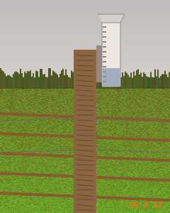

You are visitor number

since September 6, 1998
E-mail me at whaack@juno.com
Last updated January 3, 2000
| Hello and welcome. My name is Wendell and I have been reading the rain gauge on the fence
post by our garden every morning at 7 AM since April of 1971. That is going on 29 years and I have only missed
it 41 days, mostly when we went to see the kids in Colorado and the neighbor forgot.
My grandson Travis set up this page for me so the numbers are somewhere besides the kitchen drawer. I am still learning how to work it so please be patient. If you have rain records of your own or know where the weather is coming from I would like to hear from you. Readings are in inches. A "T" means trace, which is less than one hundredth. |
 This is the gauge. Taken June 1998. |
| Month | 1999 | My Avg. (1971-1998) | Most rain in one day |
| January | 0.62 | 0.68 | 0.31 (Jan 22, snow melted) |
| February | 0.71 | 0.81 | 0.40 (Feb 11) |
| March | 1.94 | 2.05 | 0.88 (Mar 30) |
| April | 3.88 | 2.79 | 1.12 (Apr 17) |
| May | 4.71 | 4.31 | 2.35 (May 8) see below |
| June | 5.02 | 4.12 | 1.60 (Jun 21) |
| July | 3.10 | 3.48 | 0.94 (Jul 4) |
| August | 2.46 | 3.36 | 1.05 (Aug 9) |
| September | 1.33 | 2.92 | 0.70 (Sep 26) |
| October | 0.88 | 1.98 | 0.52 (Oct 2) |
| November | 0.21 | 1.24 | 0.14 (Nov 30) |
| December | 0.54 | 0.83 | 0.29 (Dec 17, snow) |
| YEAR | 25.40 | 28.57 |
Notes from the ledger
Other years
I am typing in the old ledgers a few years at a time. So far I have done:
1998 | 1997 | 1996 | 1993 (the wet year)
(The rest are coming. There are a lot of them.)
Weather links I use
You are visitor number

since September 6, 1998
E-mail me at whaack@juno.com
Last updated January 3, 2000